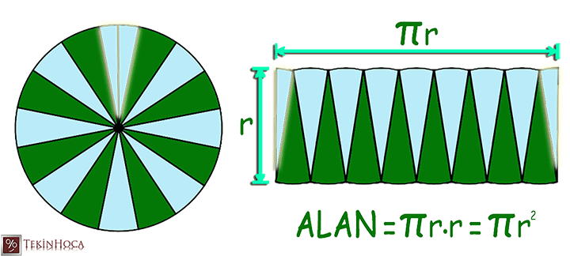
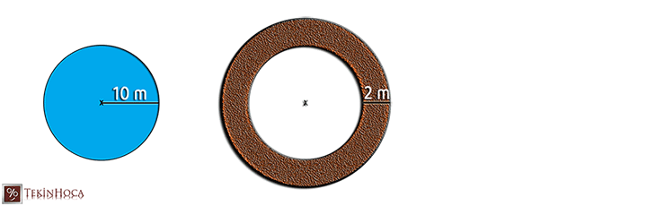

🔎
Önceki bilgilerimizi hatırlayalımDairenin alan bağıntısını bulabilmek için, daha önce öğrendiğimiz üç bilgiyi bir araya getireceğiz:
▭ Dikdörtgenin alanı
Taban × Yükseklik
▱ Paralelkenarın alanı
Taban × Yükseklik
⭕ Çemberin uzunluğu (çevresi)
2 × π × r (r: yarıçap)
Soru: Paralelkenarın alan bağıntısını bulurken, paralelkenarı keserek bir dikdörtgene dönüştürmüştük. Acaba benzer bir strateji, dairenin alan bağıntısını bulmak için de kullanılabilir mi?
π (pi) sayısı irrasyonel bir sayıdır (3,14159...); işlemlerde kolaylık sağlaması için genellikle 3, 3,14 veya 22/7 yaklaşık değerleri kullanılır.
🍕
Daire Dilimlerinden DikdörtgeneBir daireyi eş dilimlere ayırıp, dilimleri sırayla (biri yukarı biri aşağı bakacak şekilde) yan yana dizersek, aşağıdaki gibi bir şekil elde ederiz. Dilim sayısı arttıkça bu şekil, bir dikdörtgene daha çok benzer.

Oluşan dikdörtgen benzeri şeklin uzun kenarı, dairenin çevresinin yarısına eşittir
(çünkü dilimlerin yarısı üstte, yarısı altta yer alır):
Uzun kenar ≈ \(\dfrac{2\pi r}{2} = \pi r\)
Şeklin kısa kenarı ise dairenin yarıçapına (r) eşittir.
(çünkü dilimlerin yarısı üstte, yarısı altta yer alır):
Uzun kenar ≈ \(\dfrac{2\pi r}{2} = \pi r\)
Şeklin kısa kenarı ise dairenin yarıçapına (r) eşittir.
Alan = (Uzun kenar) × (Kısa kenar) = πr × r = π × r²
Bu çıkarımı, farklı yarıçaplı dairelerde ve farklı sayıda dilimle de deneyerek (dilim sayısı arttıkça yaklaşımın iyileştiğini görerek) değerlendirebiliriz.
📐
Dairenin Alan FormülüDairenin alanı, yarıçap uzunluğunun karesi ile π sayısının çarpımıdır: A = π × r²
Uygulama
Yarıçapı 6 cm olan bir dairenin alanını bulunuz (π ≈ 3 alınız).
1
A = r² × π formülü kullanılır.
2
A = 6² × 3 = 36 × 3
Sonuç: Dairenin alanı 108 cm²'dir.
Aşağıdaki kaydırıcıyla yarıçapı, butonlarla π değerini seçin; dairenin alanı anında hesaplansın.
✏️
Çözümlü örneklerÖrnek 1
Yarıçapı 4 cm olan bir dairenin alanını bulunuz. (π ≈ 3)
1
A = r² × π = 4² × 3 = 16 × 3
Sonuç: 48 cm²
Örnek 2
Çapı 14 cm olan bir dairenin alanını bulunuz. (π ≈ 22/7)
1
Çap 14 cm olduğundan yarıçap r = 7 cm'dir.
2
A = r² × π = 7² × \(\dfrac{22}{7}\) = 49 × \(\dfrac{22}{7}\)
Sonuç: 154 cm²
Örnek 3
Yarıçapı 10 cm olan bir dairenin alanını bulunuz. (π ≈ 3,14)
1
A = r² × π = 10² × 3,14 = 100 × 3,14
Sonuç: 314 cm²
Örnek 4
Alanı 75 cm² olan bir dairenin yarıçapı kaç cm'dir? (π ≈ 3)
1
75 = r² × 3 → r² = 25
2
r² = 25 olduğundan r = 5
Sonuç: Yarıçap 5 cm'dir.
Örnek 5
Yarıçapı 15 cm olan dairesel bir pizzanın alanı kaç cm²'dir? (π ≈ 3)
1
A = r² × π = 15² × 3 = 225 × 3
Sonuç: 675 cm²
Örnek 6
Dairesel bir havuzun yarıçapı 10 m'dir. Havuzun çevresine, dışa doğru 2 m genişliğinde bir yürüyüş yolu yapılacaktır. Yürüyüş yolunun alanı kaç m²'dir? (π ≈ 3)

1
Havuz + yol birlikte yarıçapı 10+2=12 m olan bir daire oluşturur.
2
Büyük dairenin alanı: 12² × 3 = 144 × 3 = 432 m²
3
Havuzun (küçük dairenin) alanı: 10² × 3 = 100 × 3 = 300 m²
4
Yürüyüş yolunun alanı, iki alan arasındaki farktır: 432 − 300
Sonuç: Yürüyüş yolunun alanı 132 m²'dir.
📝
Çalışma Soruları1) Yarıçapı 5 cm olan bir dairenin alanı kaç cm²'dir (π ≈ 3)?
2) Çapı 20 cm olan bir dairenin alanı kaç cm²'dir (π ≈ 3,14)?
Doğru mu, yanlış mı?
Dairenin alanı, yarıçapın karesi ile π sayısının çarpımına eşittir.
Dairenin alan bağıntısını bulurken çapın uzunluğu doğrudan formülde kullanılır.
Daireyi çok sayıda eş dilime ayırıp yeniden dizersek, oluşan şekil bir dikdörtgene yaklaşır.
📌
ÖzetDairenin alanı yarıçap uzunluğunun karesi ile π sayısının çarpımıdır: A = r² × π.
Bu bağıntı, daireyi eş dilimlere ayırıp yaklaşık bir dikdörtgen (taban=πr, yükseklik=r) oluşturarak elde edilir.
| Büyüklük | Bağıntı |
|---|---|
| Çemberin uzunluğu (çevre) | 2 × π × r |
| Dairenin alanı | r² × π |
MAT.7.4.7 süreç bileşenleri: Dikdörtgen/paralelkenar alanı ve çember uzunluğu deneyimlerini gözden geçirme, dairenin alan bağıntısına çıkarım yapma, çıkarımı farklı örneklerle değerlendirme.
🏆
Kendini Dene